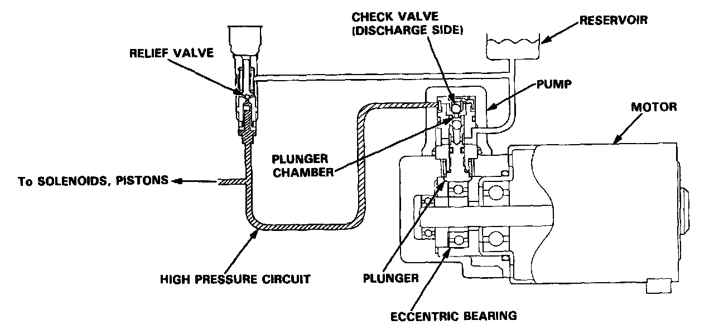

Brake Fluid Pump: Description and Operation

Motor and Pump
As the motor rotates, it drives the plunger-type ABS pump and raises the brake fluid pressure to approximately 25 MPa (250 kgf/cm2, 3,600 psi). The eccentric bearing is attached to the motor shaft end; it contacts the plunger of the pump plunger. The motor shaft's rotational motion is transmitted to the reciprocating motion of the pump plunger.
When the plunger is pushed, the brake fluid in the plunger chamber is pressurized and fed to the accumulator, solenoid, and piston, via the check valve. When the pressure in the accumulator exceeds 34 MPa (350 kgflcm2, 5,000 psi), the relief valve opens to release the excess brake fluid pressure to the reservoir, thereby protecting the system.